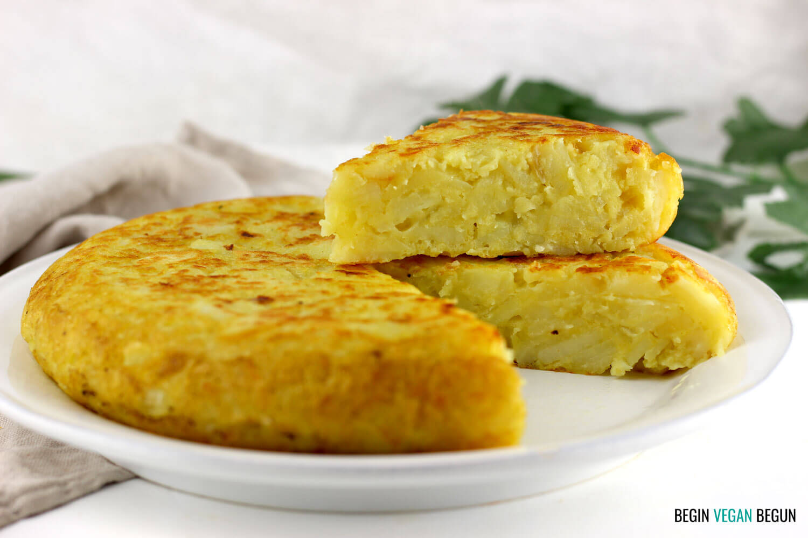

|  |
Tortilla de patatasTiempo de elaboración:30 minutosRaciones:4Dificultad:Baja |
En primer lugar es pelar las patatas, y trocearlas, en taquitos o de la forma que mas queramos, procedemos a calentar el aceite para freir las patatas, dejamos freir las patatas durante alrededor de 10 minutos, una vez que las terminemos de freir, las dejamos en un recipiente con papel absorbente para retirar el exceso de aceite.Ahora procedemos a batir los huevos, una vez que lo hagamos añadimos las patatas a los huevos batidos, y procedemos a ponerlo en la sarten dandole la primera vuelta a los 2 minutos y las otras cada 30 segundos hasta que este totalmente hecha.
Huevo